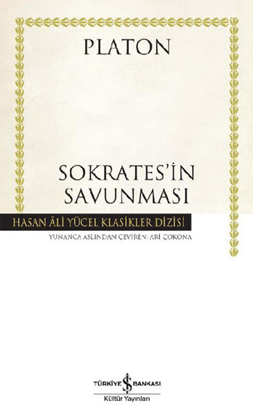

SOKRATES'İN SAVUNMASI - PLATON
Sokratesin öğrencisi Platon tarafından yazılan eser, Atinalılar tarafından, şehrin tanrılarına inanmadığı ve gençleri zehirlediği gerekçesiyle suçlanan Sokrates’in Atina demokrasisi tarafından yargılanırken, mahkemeye ve tüm insanlığa sunduğu, ilgi çekici, düşündürücü ve tarihi savunmasını okumanız dileğiyle iyi okurlar..
ünlü yunan düşünür Sokrates m.ö. 400'lü yıllarda yaşamıştır. dönemin ileri gelenleri tarafından "devletin tanrılarını inkar etmek,yunanlı gençleri olumsuz etkilemek ve halkı isyana teşvik etmek..." gibi suçlardan dava açılmış. bu kitapda da mahkemede sokrates kendini savunuyor öğrencisi platon'da o savunmayı kaleme alıyor bunu hiç sıkmadan bunaltmadan,ilgi çekici ve düşündürcü bir şekilde yazıyor. çok değerli bir eser haline dönüştürüyor. kesinlikle okunmalı.